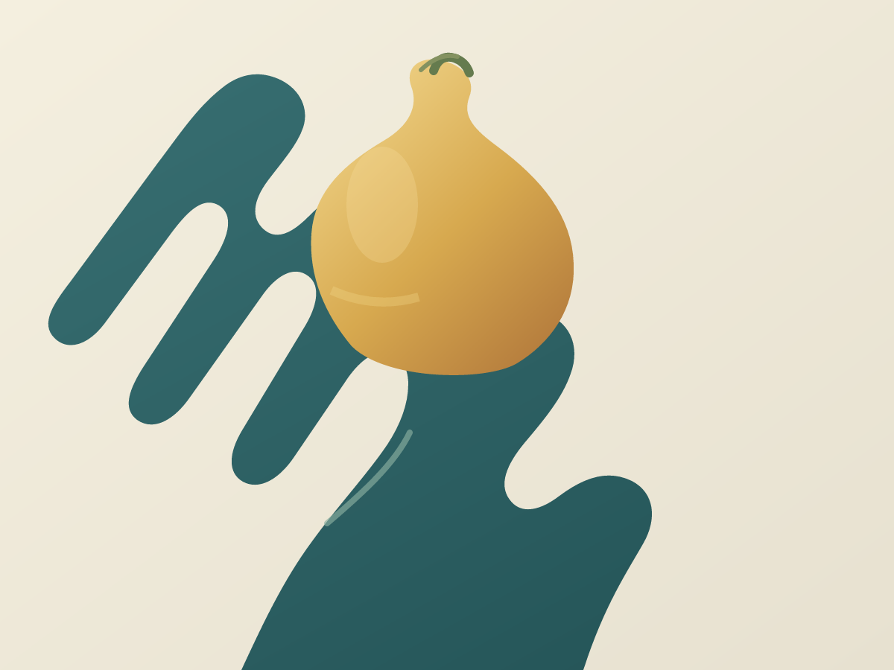

Vyt Aitken / contact study / 15 October 2026
Touch,
Twice
The same open hand. The same pear. Only the meeting changes.

A hard meeting
A little warmth at the meeting
The cupped hand carries the weight. A narrow shift warms the contact, while the rest of the cut stays clear.
Back to the studio.